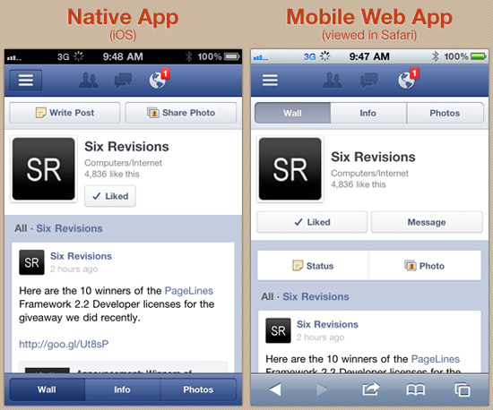

Your browser doesn't support the features required by impress.js, so you are presented with a simplified version of this presentation.
For the best experience please use the latest Chrome, Safari or Firefox browser.
Responsive Web DesignArvind Ravulavaru
Contents
What is RWD?
Why RWD?
Alternatives?
Native vs Mobile Web
How can we achieve it?
Viewport
<meta name="viewport" content="width=device-width,
initial-scale=1.0, maximum-scale=1.0, user-scalable=no" >Media Queries